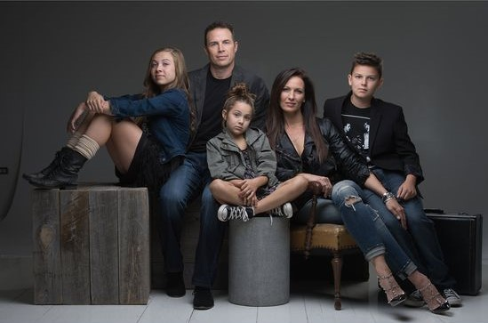
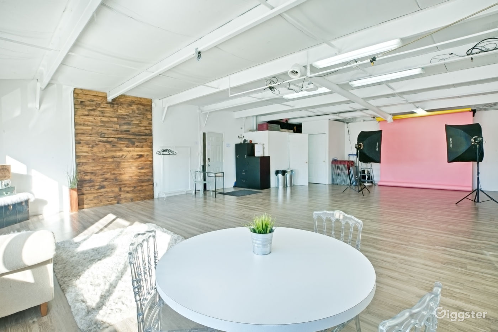

About Us
DMYTROGRAPHY - the Story
At the heart of our passion for photography lies a rich history of capturing life's most precious moments. From our humble beginnings as a small family business, we have grown into a trusted name in the industry, dedicated to preserving memories for generations to come. Our journey has been one of constant innovation, always pushing the boundaries of what is possible and striving for excellence in every shot. Join us on a journey through time and discover the story of our proud heritage, a legacy that continues to inspire us today.
Why should you choose DMYTROGRAPHY?
- Cutting-edge technology: Our studio is equipped with state-of-the-art cameras, lighting, and editing software to ensure that we deliver the highest quality results.
- Creative expertise: Our team of talented photographers and videographers have years of experience in the industry and are dedicated to capturing the essence of your special moments.
- Customization options: We offer a range of customizable packages to suit your unique needs and preferences, so you can rest assured that you'll get exactly what you want.
- Competitive pricing: We believe that professional photography and videography should be accessible to everyone, which is why we offer competitive pricing without compromising on quality.
- Exceptional customer service: We strive to provide a seamless and stress-free experience for our clients, from booking to delivery, with open communication and a friendly, supportive approach.
Studio Details
Our studio is more than just a space to take photographs and record videos; it's a place where creativity thrives and memories are made. From our state-of-the-art equipment to our comfortable lounge area, every detail is designed with your satisfaction in mind. Our team of professionals is dedicated to providing you with the highest quality service, ensuring that your experience is nothing short of extraordinary. Whether you're looking for a cozy, intimate space for a newborn shoot or a large, versatile area for a corporate video, we have everything you need to bring your vision to life. Come and see for yourself why our studio is the perfect place for your next shoot.